RoboTTT (Jiang et al., NVIDIA / Stanford / UT Austin, July 2026)
T²Mem (Liu et al., Stanford / NVIDIA / Michigan, September 2026)
Nir Pechuk · Continual learning reading group
Choosing $\mathcal{L}_{\text{inner}}$ and $\mathcal{L}_{\text{outer}}$ is choosing how we hope to use test-time experience.
| LLM paper | How we use past experience | Inner objective | Outer objective | Robotics challenge |
|---|---|---|---|---|
| TTT Layers / Titans | Remember context | Reconstruct the current token's features. | Use input and memory for NTP. | Non-Markovian or partially observed tasks. |
| In-Place TTT | Effectively use context for NTP | Reconstruct the next token's features. | ||
| Few-Shot TTT | Learn from examples | Predict the examples. | – | Few-shot learning and shifting tasks |
| FTTT | Learn from feedback | Predict the feedback. | Use feedback-prediction gradients to optimize solutions. | Adapting from failures |
| TTT-Discover | Increase probability of breakthroughs | Maximize $\mathbb{E}[\exp(\text{reward})]$. | – | Discovering a successful strategy through scoring |
Highlighted: what today's papers look like mechanically.
One noise level per chunk, not per sequence. Shared noise makes whole sequences uniformly easy or hard; training is unstable without this.
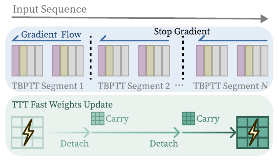
Fast weights carry across segments, gradients are cut. GPU memory scales with segment length, not context length. $W_0$ still gets gradient through segment 1.
Click a clip for the full sped-up rollout. YAM bimanual, 4 RGB cameras. Baselines: GR00T N1.7 (single step), GR00T N1.7 Hist. (one history frame), GDN (same placement and parameter count, Gated DeltaNet instead of TTT). Sequence models post-trained at 1K context. Video: research.nvidia.com/labs/gear/robottt
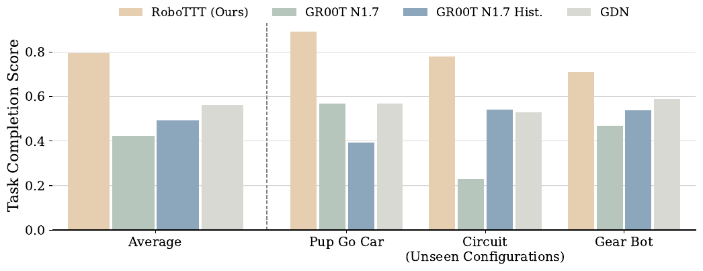
| fully successful trials, % | recovered after a human removes a part, % | ||||
|---|---|---|---|---|---|
| Pup Go Car | Circuit | Gear Bot | roof | tire | |
| RoboTTT | 45 | 65 | 20 | 75 | 90 |
| GR00T N1.7 | 15 | 15 | 0 | 50 | 55 |
| GR00T N1.7 Hist. | 0 | 40 | 0 | 15 | 25 |
| GDN | 15 | 40 | 0 | 65 | 90 |
Table 1 (20 trials, 10 for Gear Bot) and Table 3 (20 trials per condition, 30 min of perturbation data co-trained). Darker is better within a column.
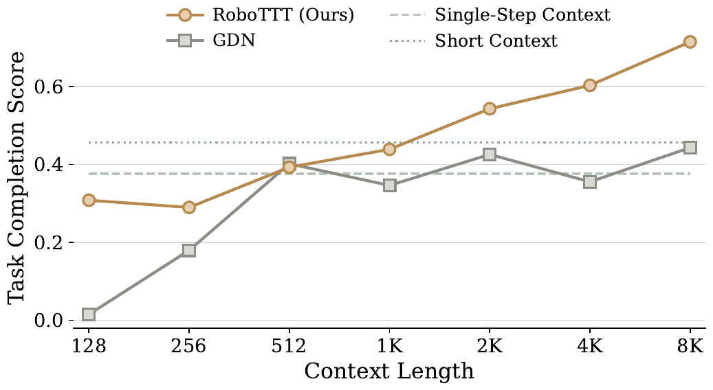
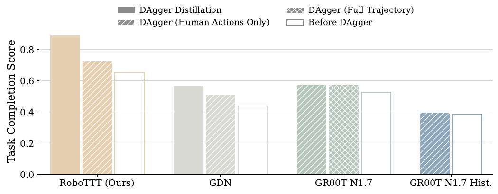
| Circuit, unseen configuration | Completion | Successes |
|---|---|---|
| RoboTTT | 65% | 6 / 10 |
| GDN | 33% | 0 / 10 |
Table 2. GR00T N1.7 cannot condition on context; its Hist. variant's window is far shorter than a video.
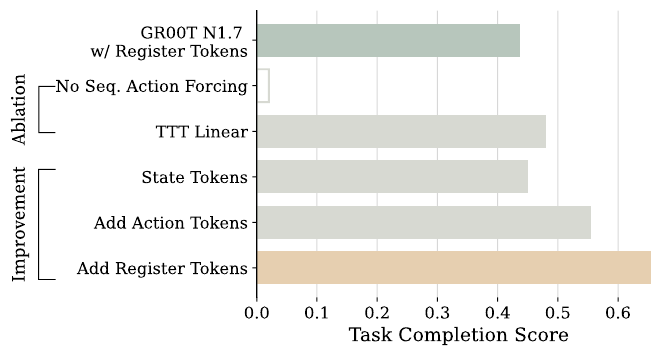
Why are we putting memory into the action head? Would it be more useful to remember observations?
Robot streams are strongly correlated with few surprising moments. Do we need to memorize each time step equally?
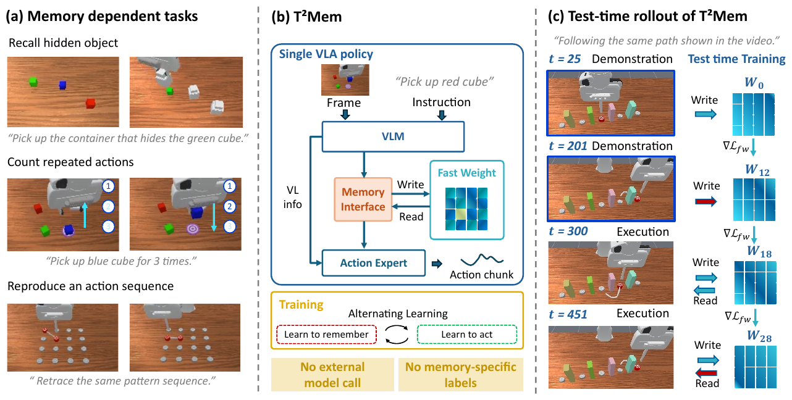
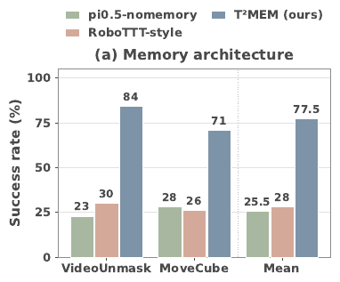
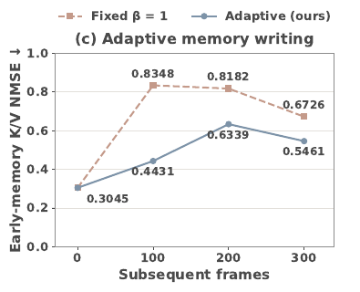
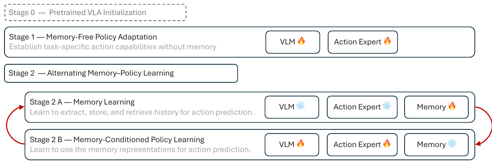
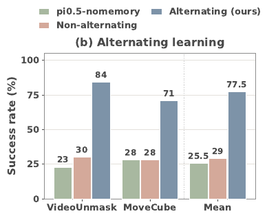
| Counting | Permanence | Reference | Imitation | ||||||||||||||
|---|---|---|---|---|---|---|---|---|---|---|---|---|---|---|---|---|---|
| BinFill | PickX | SwingX | StopCube | VidUmsk | BtnUmsk | VidUmskS | BtnUmskS | PickHighL | VidRepick | VidPlcBtn | VidPlcOrd | MoveCube | InsertPeg | PatternLock | RouteStick | Avg | |
| Human | 96.0 | 100 | 80.0 | 78.0 | 90.0 | 92.0 | 92.0 | 90.0 | 92.0 | 92.0 | 98.0 | 90.0 | 90.0 | 98.0 | 84.0 | 86.0 | 90.5 |
| GroundSG, oracle subgoals (privileged) | 85.8 | 100 | 100 | 49.7 | 98.8 | 95.0 | 99.2 | 80.2 | 83.3 | 97.3 | 100 | 100 | 87.8 | 15.6 | 97.0 | 55.6 | 84.1 |
| MemER (keyframes + VLM subgoals) | 56.7 | 79.3 | 59.3 | 0.0 | 81.3 | 72.0 | 38.0 | 21.3 | 70.7 | 25.3 | 30.0 | 26.0 | 82.7 | 6.7 | 16.7 | 12.0 | 42.4 |
| FrameSamp + Modul (best RoboMME) | 39.6 | 87.3 | 92.0 | 42.0 | 32.7 | 25.1 | 24.4 | 18.2 | 22.9 | 30.4 | 60.0 | 32.0 | 77.8 | 7.6 | 53.6 | 66.7 | 44.5 |
| TTT + Modul (RoboMME's naive TTT) | 34.2 | 65.1 | 36.7 | 2.1 | 27.2 | 22.1 | 25.2 | 14.1 | 14.6 | 12.1 | 32.7 | 22.3 | 31.2 | 1.1 | 3.6 | 7.0 | 22.0 |
| π0.5 (memory-free) | 30.0 | 42.9 | 35.6 | 6.7 | 20.4 | 22.2 | 18.7 | 6.7 | 11.3 | 0.4 | 31.1 | 25.8 | 26.0 | 1.6 | 2.9 | 4.7 | 17.9 |
| Stage 1 (their memory-free adaptation) | 26.7 | 34.0 | 31.3 | 2.0 | 27.3 | 6.0 | 18.0 | 2.0 | 11.3 | 1.3 | 26.7 | 27.3 | 38.0 | 1.3 | 3.3 | 5.3 | 16.4 |
| T²Mem | 60.7 | 91.3 | 90.7 | 70.0 | 88.0 | 59.3 | 29.3 | 20.0 | 50.7 | 38.7 | 35.3 | 30.0 | 80.7 | 36.0 | 50.0 | 78.7 | 56.8 |
Table 1, condensed (full table in backup). Success rate %, 50 episodes × 3 seeds per task. Blue: best among non-privileged methods. Baseline numbers are quoted from the RoboMME paper.
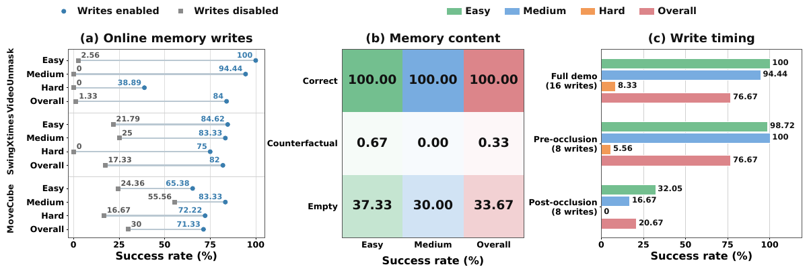
The counterfactual pair behind (b): same instruction, same final scene, different history, different correct container. Expert demonstrations from the project page, not policy rollouts. Video: yzliu84.github.io/T2MEM-project
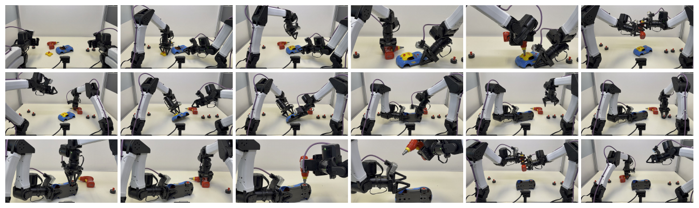
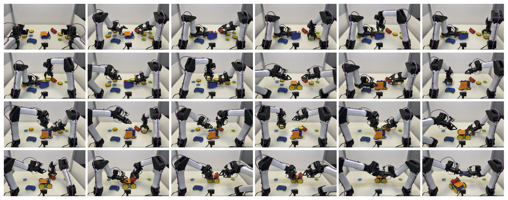
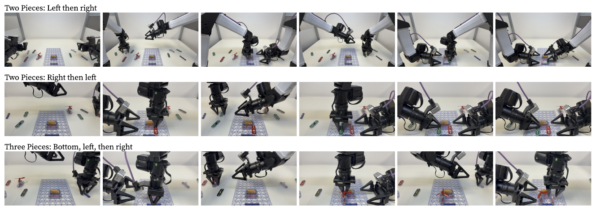
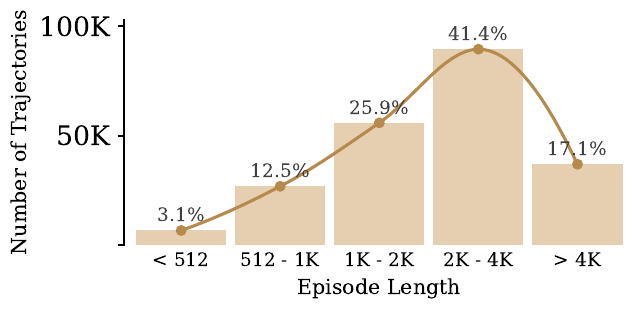
$\beta_t$ and the calibration are stop-gradient. Outer gradients still flow through the fast-state recurrence, $g_t$, the projections and $\rho$. The "fixed $\beta=1$" control keeps this calibration.
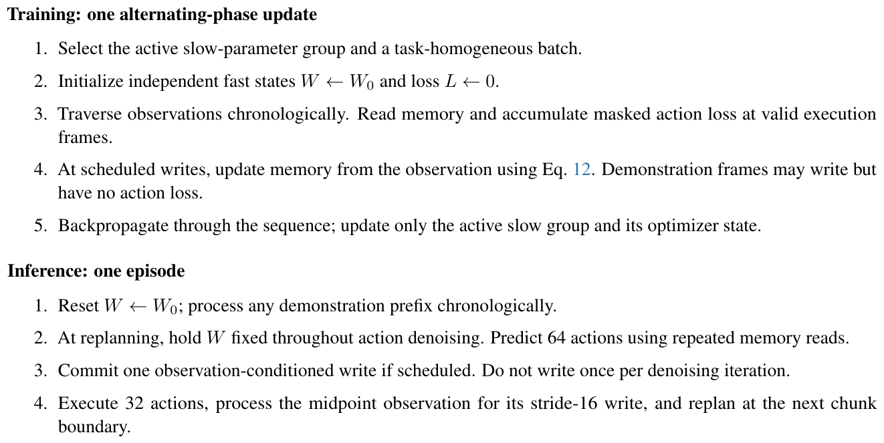
| Stage 1 | Stage 2A | Stage 2B | |
|---|---|---|---|
| Purpose | memory-free adaptation | memory learning | memory-conditioned policy |
| Trains | VLM LoRA, AE | interface, projections, $W_0$, step multipliers, gates | VLM LoRA, AE, proprio proj. |
| Budget | 20K steps | 500 updates / cycle | 500 updates / cycle |
| LR | 2e-5 | 7.5e-5 (gates 5e-4) | 3e-5 |
| Batch | 64 frames | 32 sequences | 32 sequences |
Table 3. 32 H200 for 48 hours in total. Stride 16, predict 64 actions, execute 32.
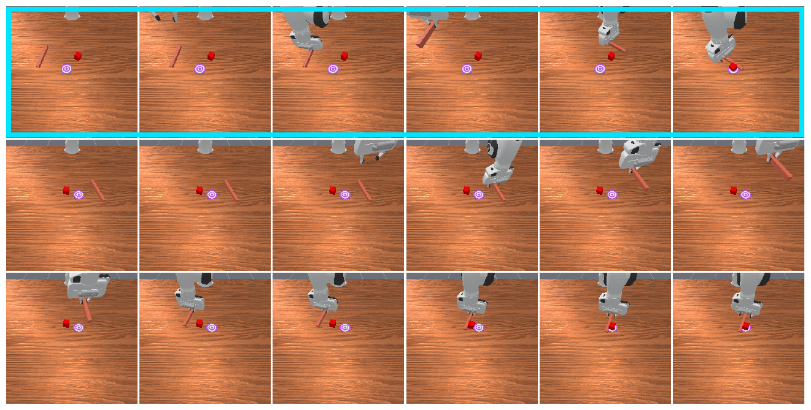
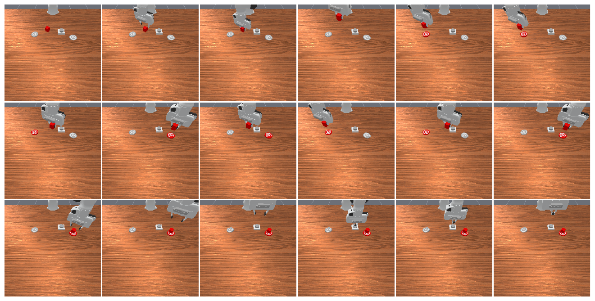
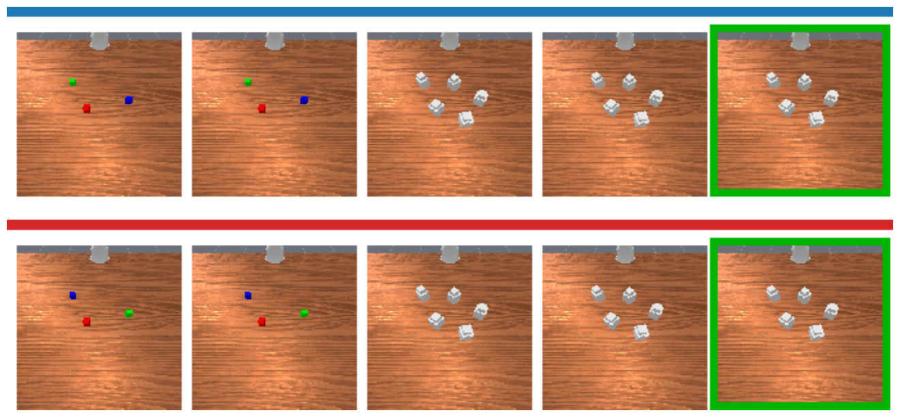
| BinFill | PickX | SwingX | StopCube | VidUmsk | BtnUmsk | VidUmskS | BtnUmskS | PickHighL | VidRepick | VidPlcBtn | VidPlcOrd | MoveCube | InsertPeg | PatternLock | RouteStick | Avg | |
|---|---|---|---|---|---|---|---|---|---|---|---|---|---|---|---|---|---|
| Human | 96.00 | 100.0 | 80.00 | 78.00 | 90.00 | 92.00 | 92.00 | 90.00 | 92.00 | 92.00 | 98.00 | 90.00 | 90.00 | 98.00 | 84.00 | 86.00 | 90.50 |
| SimpleSG · Oracle (privileged) | 85.78 | 99.78 | 100.0 | 44.67 | 33.11 | 22.00 | 15.56 | 15.56 | 44.00 | 27.78 | 31.33 | 26.00 | 87.33 | 10.00 | 95.33 | 55.11 | 49.58 |
| GroundSG · Oracle (privileged) | 85.78 | 100.0 | 100.0 | 49.67 | 98.78 | 95.00 | 99.22 | 80.22 | 83.33 | 97.33 | 100.0 | 100.0 | 87.78 | 15.56 | 97.00 | 55.56 | 84.08 |
| SimpleSG · Gemini | 46.00 | 63.00 | 45.00 | 2.00 | 29.00 | 9.00 | 14.00 | 2.00 | 20.00 | 15.00 | 26.00 | 29.00 | 61.00 | 4.00 | 7.00 | 0.00 | 23.25 |
| SimpleSG · QwenVL | 77.56 | 95.33 | 5.11 | 0.44 | 34.22 | 19.33 | 15.33 | 9.56 | 17.11 | 25.33 | 33.33 | 25.11 | 82.00 | 3.78 | 12.67 | 7.78 | 29.00 |
| GroundSG · Gemini | 26.00 | 18.00 | 4.00 | 3.00 | 36.00 | 14.00 | 13.00 | 0.00 | 9.00 | 17.00 | 12.00 | 7.00 | 17.00 | 0.00 | 7.00 | 2.00 | 11.56 |
| GroundSG · QwenVL | 52.00 | 92.67 | 7.33 | 0.00 | 88.67 | 24.00 | 30.67 | 14.00 | 15.11 | 25.33 | 54.00 | 31.78 | 71.56 | 3.33 | 6.67 | 6.00 | 32.70 |
| TokenDrop · Context | 48.67 | 85.11 | 94.67 | 3.11 | 33.78 | 31.56 | 26.22 | 16.00 | 20.67 | 17.78 | 31.11 | 25.33 | 81.33 | 4.00 | 12.67 | 20.00 | 34.50 |
| TokenDrop · Modul | 34.44 | 83.56 | 86.00 | 5.33 | 28.22 | 29.33 | 28.44 | 21.33 | 21.33 | 22.00 | 59.56 | 36.00 | 62.00 | 7.11 | 32.44 | 51.56 | 38.04 |
| TokenDrop · Expert | 54.22 | 87.56 | 91.78 | 4.22 | 26.67 | 30.44 | 18.44 | 18.89 | 19.33 | 20.89 | 36.44 | 24.67 | 87.56 | 2.22 | 16.22 | 18.22 | 34.86 |
| FrameSamp · Context | 41.22 | 72.00 | 73.67 | 13.67 | 26.89 | 30.22 | 20.89 | 15.22 | 17.67 | 15.22 | 30.00 | 20.89 | 77.22 | 1.22 | 15.22 | 19.67 | 30.68 |
| FrameSamp · Modul | 39.56 | 87.33 | 92.00 | 42.00 | 32.67 | 25.11 | 24.44 | 18.22 | 22.89 | 30.44 | 60.00 | 32.00 | 77.78 | 7.56 | 53.56 | 66.67 | 44.51 |
| FrameSamp · Expert | 57.33 | 86.22 | 94.67 | 28.89 | 31.78 | 25.78 | 22.89 | 20.22 | 19.11 | 23.11 | 30.00 | 24.22 | 83.11 | 2.00 | 13.56 | 17.11 | 36.25 |
| TTT · Context | 35.56 | 62.89 | 42.44 | 3.33 | 29.78 | 22.89 | 18.44 | 14.44 | 20.44 | 13.11 | 34.22 | 20.22 | 32.44 | 1.11 | 1.56 | 3.56 | 22.28 |
| TTT · Modul | 34.22 | 65.11 | 36.67 | 2.11 | 27.22 | 22.11 | 25.22 | 14.11 | 14.56 | 12.11 | 32.67 | 22.33 | 31.22 | 1.11 | 3.56 | 7.00 | 21.96 |
| TTT · Expert | 34.89 | 63.78 | 41.33 | 4.00 | 31.78 | 22.44 | 19.56 | 18.00 | 12.22 | 9.56 | 34.00 | 22.89 | 33.56 | 0.89 | 3.11 | 5.56 | 22.35 |
| RMT · Context | 32.44 | 56.89 | 33.56 | 5.78 | 31.33 | 10.89 | 17.33 | 2.00 | 14.00 | 3.78 | 32.00 | 29.11 | 25.78 | 2.00 | 5.56 | 8.89 | 19.46 |
| RMT · Modul | 33.33 | 60.78 | 37.78 | 4.67 | 31.11 | 11.78 | 17.78 | 2.44 | 17.11 | 4.22 | 32.00 | 31.11 | 24.67 | 2.21 | 3.78 | 8.00 | 20.17 |
| RMT · Expert | 35.78 | 60.22 | 36.00 | 5.56 | 28.00 | 17.11 | 15.78 | 2.00 | 11.78 | 0.22 | 24.22 | 22.67 | 20.00 | 1.89 | 4.22 | 4.89 | 18.15 |
| π0.5 | 30.00 | 42.89 | 35.56 | 6.67 | 20.44 | 22.22 | 18.67 | 6.67 | 11.33 | 0.44 | 31.11 | 25.78 | 26.00 | 1.56 | 2.89 | 4.67 | 17.93 |
| π0.5 w/ past actions | 26.67 | 58.33 | 26.67 | 4.67 | 30.67 | 23.67 | 20.67 | 16.00 | 12.33 | 8.67 | 24.00 | 18.67 | 34.00 | 1.00 | 4.00 | 5.67 | 19.73 |
| SAM2Act+ | 40.00 | 76.00 | 25.33 | 0.00 | 27.33 | 32.00 | 18.00 | 26.67 | 17.33 | 5.33 | 24.67 | 20.00 | 29.33 | 0.00 | 0.00 | 0.00 | 21.37 |
| MemER | 56.67 | 79.33 | 59.33 | 0.00 | 81.33 | 72.00 | 38.00 | 21.33 | 70.67 | 25.33 | 30.00 | 26.00 | 82.67 | 6.67 | 16.67 | 12.00 | 42.38 |
| Stage 1 (no memory) | 26.67 | 34.00 | 31.33 | 2.00 | 27.33 | 6.00 | 18.00 | 2.00 | 11.33 | 1.33 | 26.67 | 27.33 | 38.00 | 1.33 | 3.33 | 5.33 | 16.38 |
| T²Mem | 60.67 | 91.33 | 90.67 | 70.00 | 88.00 | 59.33 | 29.33 | 20.00 | 50.67 | 38.67 | 35.33 | 30.00 | 80.67 | 36.00 | 50.00 | 78.67 | 56.83 |
Table 1 of T²Mem; all baseline numbers quoted from the RoboMME paper. Context / Modul / Expert are three ways RoboMME integrates a memory representation: prepended tokens, adaptive LayerNorm modulation of the AE, or a separate memory transformer attended by the AE.
Missing slide. Press ↑ or M.